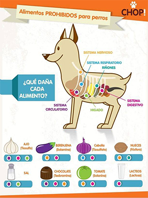

2. Información sobre los perros:
 |
 |
 |
|
Las pulgas, garrapatas, ácaros, etc. son parásitos muy comunes en los perros, pregúntale a tu veterinario cuál régimen de control de parásitos externos es el más indicado para tu mascota; es común utilizar pipetas con aceite en el pelaje del perro o el gato cada mes, también es común hacer baños medicados. Con esto podrás controlar estos molestos parásitos.Información esencial es que los perros ya sean de pelo corto o largo mudan al menos 2 veces al año de pelo,esto se debe a los cambios de estación |
y al haber cambios bruscos en la temperatura, por lo que estos cambiaran de pelo grueso a delgado para acaparar al clima.Debemos cepillados continuamente con una cara y en estas temporadas de misa se recomiendo el uso de una deslanadora, esta los ayudará a hacer el cambio más fácil y rápido, lo que evitará que toda la casa esté llena de pelo. Otro punto en el pelaje es que algunas razas necesitan cortes de pelo regularmente para evitar enredos, acumulación de suciedad y evitar parásitos externos. |
2.1 Ejercicio Una mascota es una gran responsabilidad, no debes verla como si fuera un animal más, si no como un compañero. Los perros necesitan poder salir a estirar las piernas, correr es el ejercicio mas optimo, no importa que tan grande puede ser tu casa o que tan amplio es tu patio, nada puede reemplazar que pueda salir a correr al aire libre. |
Lo recomendable seria sacarlo a diario mínimo treinta minutos, lo óptimo sería que pudieran estar afuera corriendo 45 minutos o hasta que el perro se canse, correr les ayuda a quemar muchas energías y mantenerlos en forma, si puedes llevarlo a algún parque cerca de la naturaleza, seguro tu perro te lo agradecerá.
No veas esta actividad como una tarea más o una obligación, te sorprendería la satisfacción y relajación que provoca sacarlos a pasear, puedes inclusive involucrarte más y participar de la diversión si le llevas juguetes a tu Can.

2.2 Servicios médicos
Recuerda siempre mantener a tu mascota saludable dándole los cuidados veterinarios necesarios. Al igual que un niño, tus mascotas necesitan de cuidados médicos desde sus primeras semanas de vida. De lo contrario pueden llegar a contagiarse de posibles parásitos y enfermedades que consecuentemente pueden llegar a enfermarnos, las enfermedades zoonóticas son aquellas que son transmitidas de un animal hacia un ser humano, la mayoría de las enfermedades zoonóticas suelen ser controlables teniendo buenos hábitos de higiene y llevando un control de vacunas y de parásitos internos y externos.
Si tu mascota es adulta, llévala a un chequeo anual con el veterinario. Los perros y los gatos deben ser vacunados una vez al año contra las enfermedades más comunes (rabia, distemper, parainfluenza, parvovirus, entre otras). Procura preguntar al veterinario si necesita alguna vacuna endémica o estacional extra.
Tu veterinario te recomendará qué tan seguido debes desparasitar a tu mascota contra los parásitos internos. La desparasitación es común hacerla a través de la administración de una pastilla cada tres meses.
